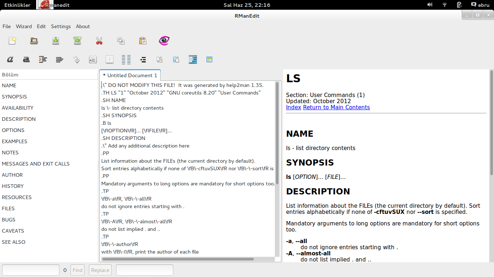

UNIX Manual Page Editor with Ruby & GTK
This project is maintained by COMU
RManEdit man sayfası hazırlamak için bir editördür.
git clone https://github.com/COMU/RManEdit.git
Debian Tabanlı Sistemler İçin Gereksinimler
sudo apt-get install ruby1.9.1-dev ruby-gtk2 libmagic-dev libwebkitgtk-3.0-dev ruby-gettext man2html libghc-webkit-dev
sudo gem install gtk2
sudo gem install ruby-filemagic
sudo gem install -v 0.0.5 gtk-webkit-ruby
Gerekli gem ve dosyaların yüklenmesi
gem build rmanedit.gemspec
sudo gem install RManEdit-1.0.0.gem
sudo chmod +x install sudo ./install